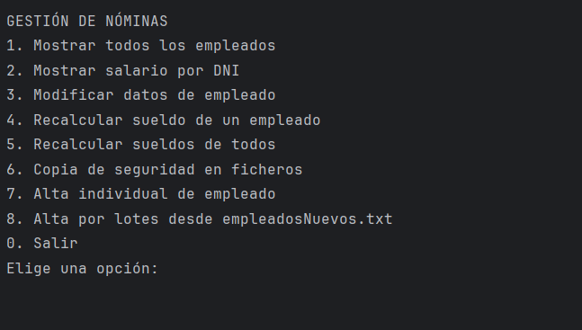

Imagen del proyectoEjercicios Nominas
Proyectos de gestión de nóminas que permite el alta/baja de nuevos empleados, que permite modificar su sueldo base dependiendo del puesto que desempeñen, se puede hacer altas masivas de usuario a través de un documento de texto y también recoger los empleados actuales en un archivo de backup que también sirve para exportar.